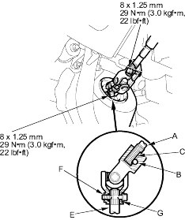

- Install the steering column, and make sure the wires are not caught or pinched by any parts.
- Insert the upper end of the steering joint onto the steering shaft (A) (line up the bolt hole (B) with the flat portion (C) on the shaft).

- Slip the lower end of the steering joint onto the pinion shaft (E) (line up the bolt hole (F) with the groove (G) around the shaft), and loosely install the lower joint bolt. Be sure that the lower joint bolt is securely in the groove in the pinion shaft.
- Pull on the steering joint to make sure that the steering joint is fully seated. Then install the upper joint bolt and tighten it.
- Finish the installation, and note these items: